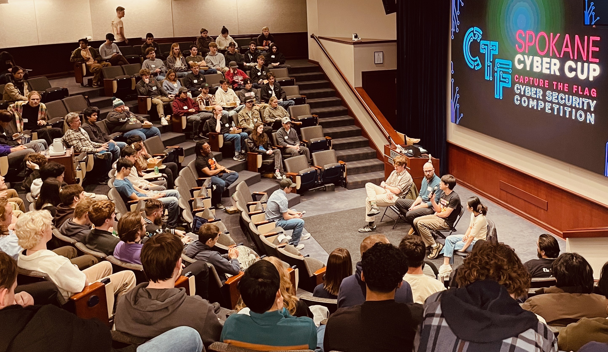

Well, it's another week of slow project progress. But, I'm actually feeling surprisingly good about some personal progress that's happening right now. I'm hyped about some realizations and growth I'm experiencing stemming from Shirzad Chamine's book Positive Intelligence. I'm excited to talk about this in a bit.
First, though: Why the slow week? Simple enough. My toddler got sick on Friday and wasn't able to attend childcare, which made for a tough start to the weekend for the wife and I juggling trying to get a few things done each at work, and then breathe a bit to recover from the added stress. Aaaaand, then my wife got sick on Sunday. So, we're kind of in survival mode and not able to activate the higher parts of our brains until things calm back down.
Spokane Cyber Cup VII 2026
Last weekend was really fun. I got to take part in the Spokane Cyber Cup as a coach. I talked a bit about it in last week's post, but it's worth bringing up again! This is a capture-the-flag style competition where students in teams of five work to complete cybersecurity challenges. The competition is open to high school and college students, and teams come from around the region to participate; University of Washington, University of Montana, Washington State University, to name a few.
The focus of the event, though, is really on learning, and I think it's really cool that the event's creator, Maxwell Dulin, comes over from his home in the Seattle area to host the event in Spokane every year. Coaches, such as myself, are not assigned to a team, but rather float between teams and assist students with hints - our goal being to guide the student toward an "aha!" moment. That said, the teams performing the best are extremely talented and fight for the top spots with relatively little coach assistance.

Lunchtime career panel featuring coaches from big tech firms and mediated by Maxwell Dulin (center)
Positive Intelligence by Shirzad Chamine
I'm just going to start out by saying I'm making what feels like very deep, personal progress in this area, and I'm excited to share about it. Lifelong issues feel like they are starting to finally melt away in some regards.
I was feeling a little stuck in my career and in life, and decided to leverage the Spring Health benefits provided by my employer. (Thank you, Flatiron!) One of the offered benefits is coaching that can be geared toward professional or personal goals. For the last few weeks I've been working with the very motivating and skilled Lucie Tesarova.
As Lucie and I dug deeper, at about our second or third week, she pointed me toward the Sabotuer Assessment. I got my results, but I didn't know what to do with them. The feedback seemed to match what I knew about myself, but I didn't see a clear "now try this" path forward. Poking around the assessment website, I noticed the creator of the assessment also wrote a book, Positive Intelligence and that I could get a copy on audio.
I started listening to the book on car rides and had a laugh right away. Mr. Charmine states that the sabotuers biggest lie is pretending to be so helpful and supportive that you either don't notice them or can't imagine living without them. "If I don't force myself to stay driven, who will? Other will pass me by. I'm right to stay determined and focused because look how far it's gotten me!" This was me all the way. From the assessment, I read my top sabotuer, the Hyper-Rational, and thought, "that's all good stuff! Who wouldn't want that!" 😂
Sure enough, Mr. Chamine follows by saying that, sure, these sabotuers helped us survive and even achieve until now, but it's time to really thrive. Why fuel and motivate ourselves with domineering stress and survival-based fear, when we can turn to higher parts of our brain? Places of creativity and openness. Of inclusion and possibility. I'm interested to explore this idea more.
The author describes a "master sabotuer," The Judge, but it was easier for me to think about after he continued associating it with the survival part of our brain. The part that helps in making survival-motivated decision and in navigating traumatic events as we develop through childhood.
This was really resonating with me because when I was a lot younger (late teens, early twenties), in my search to understand the chaos of the world, I had developed this idea that all of creation follows laws of cause and effect, action and reaction. From physical laws that govern things like gravity and erosion, to natural laws where all living things respond to impulses and instincts in a fight for survival. Humans, I posited, were unique from the rest of nature because we could step outside this cycle of reaction. We could choose, we can act -- in a purely inspired way that a creature cannot.
At the same time, humans are just as susceptible as the rest of nature to react, snap back, and default to the creature within, in emotional and excessive ways; but we are unique in that we can retrain and program ourselves to observe an emotional response as it arises that feels so natural, and choose instead to respond differently.
Anyway, before I drone on too long, I want to at least share the idea of "defeating" The Judge before this post closes. If we fight the judge, or get mad at or condemn, then we are actually strengthening The Judge because these "reactions" come from the survival part of our brain. Touching on neuroplasticity, one of the best things we can do is to simply be aware of The Judge and sabotuers. This simply reduces the reinforcement of these old neural pathways and allows us to consider alternative routing. Easier said than done! It can help to externalize The Judge and sabotuers, by saying things like, "here comes The Judge again," or, "there's that hyper-rational pattern that's been so good at providing a sense of security over the years."
Hoping to get back to technical work next week,
Andrew Antles